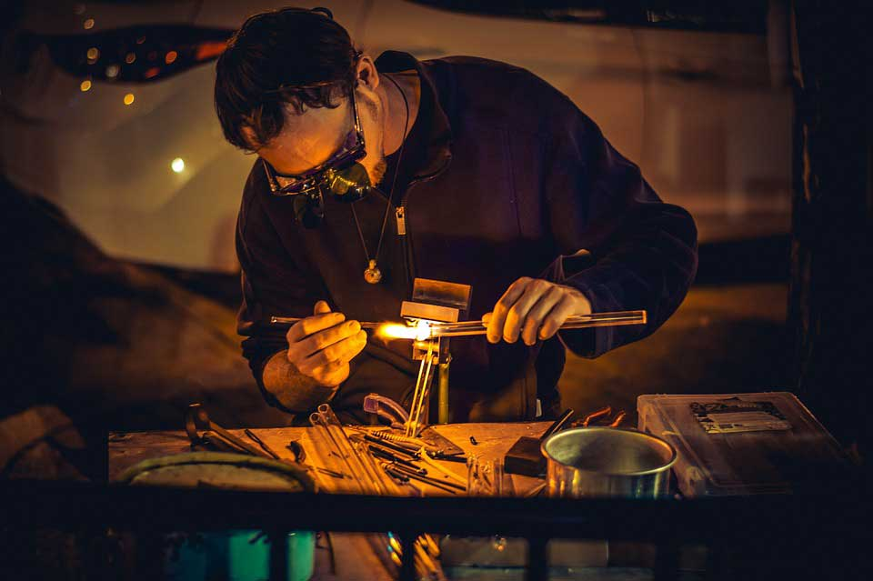

"Mi creencia es que cada Joya creada es importante en sí misma, porque va en ella un cúmulo de sentimientos que llevaron a ese diseño especial, y que a su vez, esta pieza enaltece su valor sólo al momento que encuentra la persona que la elige…entonces allí cambia mi sentimiento para incorporar y cargarse de la energía de quien la recibe…"
Fabricar una joya parte de la imaginación, de la creatividad.
Trabajar en una joya con impronta santacruceña es acercarse a los íconos originarios de esta provincia, a las milenarias figuras encontradas en pinturas rupestres, en hallazgos arqueológicos; a guardas tehuelches que fueron parte por ejemplo, de un “quillango” o de una “ruana” y que hoy pueden formar parte de una combinación de metal, tierra, carbón, lana, piedra, plata, alpaca, cobre, bronce, para dar origen a una pieza original.
También es hablar de un diseño contemporáneo donde la impronta santacruceña está dada por el material utilizado.
Claras son las características que dan originalidad e identidad a estos productos que pueden marcar tendencias y diferencias en varios aspectos. Un elemento milenario como es el carbón mineral o las Tobáceas puestos al servicio de la orfebrería para la creación de una joya moderna y artesanal con identidad provincial.